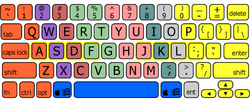
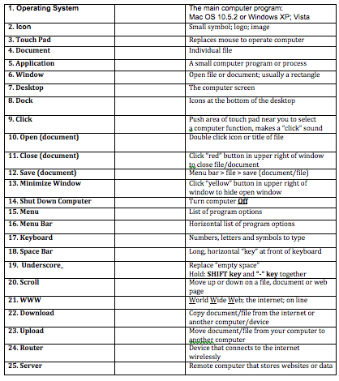

Private Computer Training!
FUNdamental Computer Training for Beginners and Senior Citizens
My fundamental computer training for beginners and senior citizens is an excellent way to learn about your computer.
Learn the Basics
Learn the basics of social media. Also learn software such as: Microsoft windows, Excel, Word,and Outlook.
Examples Instructions
Basic computer skills Navigating Windows,surfing the internet, how to manage file and folders, how to use email.
Computer Tips


Location and Hours
234 Wyoming Ave.
Sheridan, Wyoming;
Mondays 3pm-7pm,
Friday and Saturday, by appointment
Call: 307-461-0719